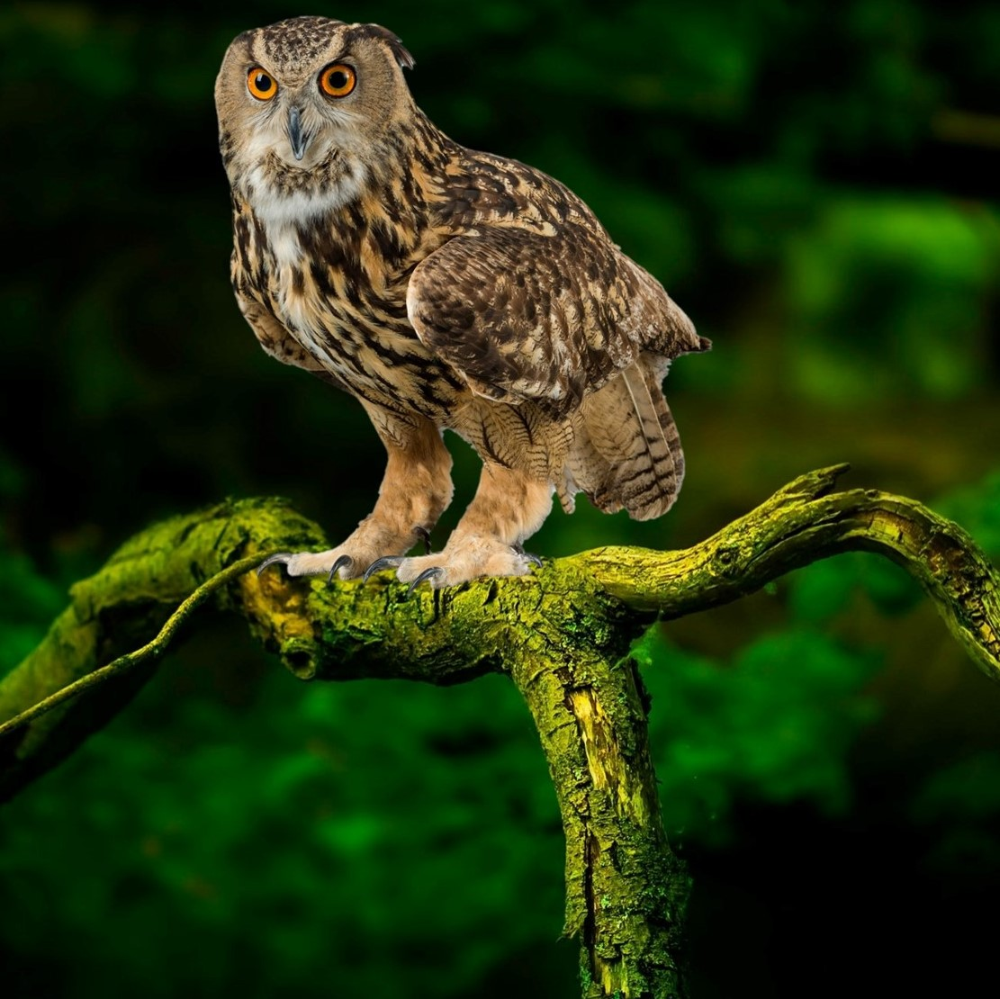
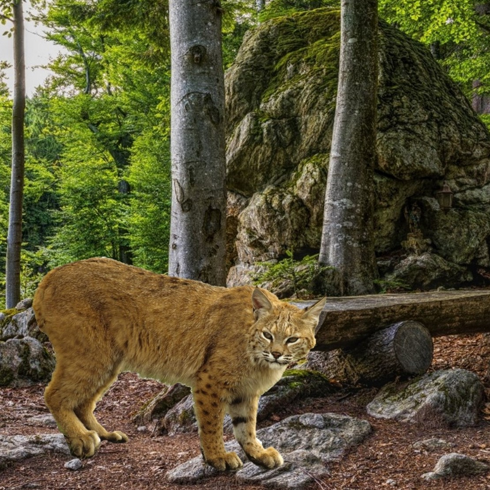
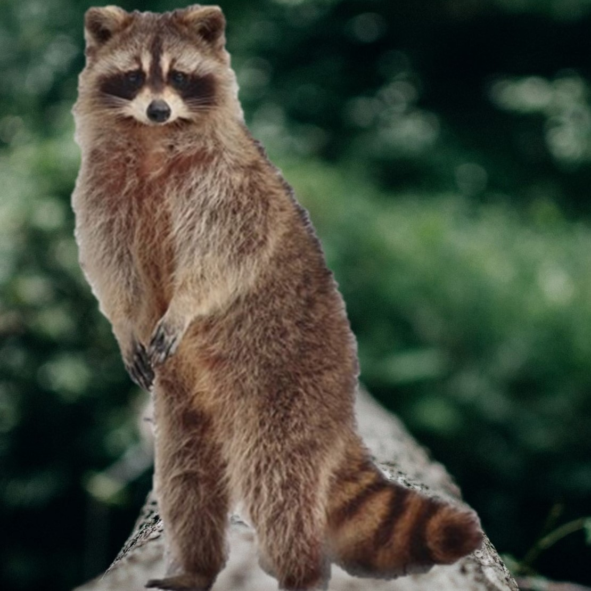
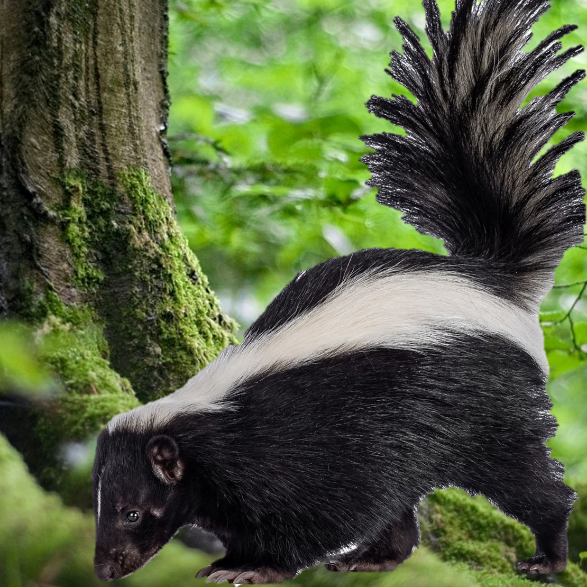

RORY'S BACKYARD
YOU FOUND 0 IN RORY'S BACKYARD!
PRESS AND HOLD THE PICTURES IN RORY'S ALBUM BELOW TO SEE HIS NOTES ABOUT EACH SPECIES

EASTERN BOX TURTLE
- Conservation Status: Vulnerable
- Ecological Role: Box turtles act as seed dispersers for many plants.
- Threats: Habitat loss, car collisions, and the taking of wild individuals to supply the pet trade.
- Ways You Can Help: Research any animal you are interested in owning as a pet before you buy it.

GREAT HORNED OWL
- Conservation Status: Least Concern
- Ecological Role: As top predators, they help control the populations of many other animals.
- Threats: Pesticides, car collisions, habitat loss, net entanglement, and illegal hunting.
- Ways You Can Help: Use natural pest controls and take down any outdoor nets not in use.

GREEN TREEFROG
- Conservation Status: Least Concern
- Ecological Role: As indicator species, green treefrogs can alert humans to negative environmental conditions.
- Threats: Competition with the nonnative Cuban Treefrog.
- Ways You Can Help: Build a toad abode or other shelter for frogs in your backyard that provides a safe place for them during the day.

NORTH AMERICAN BOBCAT
- Conservation Status: Least Concern
- Ecological Role: Bobcats are apex predators that keep small mammal and bird populations stable.
- Threats: Hunting from humans and habitat loss.
- Ways You Can Help: Spread the word that bobcats generally stay away from people and that their habitat needs saving.

NORTHERN MOCKINGBIRD
- Conservation Status: Least Concern
- Ecological Role: These birds help disperse seeds and also act as a natural form of pest control by consuming a large number of insects.
- Threats: Predation from domestic or feral cats, severe weather, and striking windows.
- Ways You Can Help: Keep your pet cat inside and place anti-collision decals on your windows to help minimize the amount of window strikes by birds.

RACCOON
- Conservation Status: Least Concern
- Ecological Role: Raccoons help control populations of their prey species, including rodents and insects.
- Threats: Humans who view the animals as pests.
- Ways You Can Help: Make sure outdoor garbage lids are secure, remove any fallen fruit from trees or bird seed from feeders at night, and never feed any wild animal.

RED RAT SNAKE
- Conservation Status: Least Concern
- Ecological Role: Red rat or corn snakes help keep rodent populations under control.
- Threats: Habitat destruction, misidentification as a venomous snake, and pet trade.
- Ways You Can Help: If you come across any wild snake, leave it alone and give it space. Encourage your family and friends to do the same.

STRIPED SKUNK
- Conservation Status: Least Concern
- Ecological Role: Skunks are a natural pest control as they consume a variety of insects.
- Threats: Skunk specific disease outbreaks and humans that view them as pests.
- Ways You Can Help: Spread the word that skunks play an important part in our environment.

WHITE-TAILED DEER
- Conservation Status: Least Concern
- Ecological Role: Considered a keystone herbivore, white-tail deer can have a dramatic effect on the plants and predators in their areas.
- Threats: Car collisions, habitat loss, and humans who view the animals as pests.
- Ways You Can Help: Look for alternative landscaping options for your yard like plants that aren’t as tasty to deer.
We value your feedback!
Click Here to tell us about your experience.